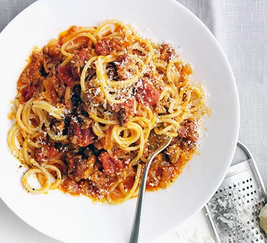

Spaghetti

Spaghetti Bolognese
With our best ever spaghetti bolognese, we've perfected a true family favourite including tips on how to easily make it in a slow cooker.
Ingredients
- Olive Oil
- 150g Pancetta diced
- 500g Beef mince
- 6 Pork Sausages skinned (look for ones with high meat content)
- 2 Onions chopped
- 4 Cloves Garlic crushed
- 2 sticks Celery finely diced
- 2 Carrots grated
- 2 x 400g tins Cherry Tomatoes
- 2 tbsp Tomato purée
- 300ml Chicken Stock
- A small bunch Basil chopped
- 500g Spaghetti
- Grated to serve Parmesan
Steps
- Heat 3 tbsp olive oil in a large, wide pan with a lid.
- Add the pancetta and cook until golden. Add the mince and cook until browned, breaking it up in the pan with a spatula or wooden spoon.
- Add the sausage in pieces and keep cooking until it is opaque – try to break up the sausage into smaller pieces as it cooks so it’s a similar size to the mince.
- Add the onions, garlic, celery and carrots and give everything a good stir. Cover and cook on a low heat until the veg softens, stirring now and then. This will take about 10 minutes.
- Add the tomatoes, purée and stock, and bring to a simmer. Cover and cook for 1 hour. Add the basil and cook for another 5 minutes.
- Cook the spaghetti, then drain and toss with the sauce. Spoon into warm bowls and serve with parmesan, if you like.
Home